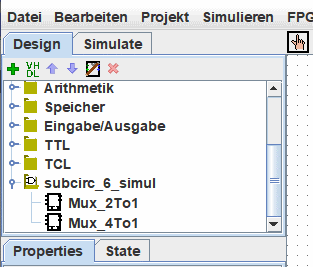

Bibliotheken von Logisim
Jedes Logisim-Projekt ist eine Bibliothek, die in andere Logisim-Projekte geladen werden kann. Sie müssen es nur in einer Datei speichern, dann in einem anderen Projekt die Datei über das Menü | Projekt |→| Bibliothek laden |→| logisim Bibliothek... | auswählen, um sie zu laden. Alle im ersten Projekt definierten Schaltungen stehen dann als Teilschaltungen für das zweite Projekt zur Verfügung. Mit dieser Funktion können Sie Komponenten, die in mehreren Projekten verwendet werden, wiederverwenden und Ihre Lieblingskomponenten mit Ihren Freunden (oder Studenten) teilen.
Unten ist unser als Bibliothek geladenes Projekt in der Navigationsleiste verfügbar.

Hinweis: Die Bibliothek darf keine Schaltung mit dem gleichen Namen wie eine bereits im Projekt vorhandene Schaltung enthalten.
Jedes Projekt hat einen bezeichneten Hauptschaltung, der über das Menü | Projekt |→| Als Hauptschaltung festiegen | auf den aktuellen Kreis bezogen werden kann. Die einzige Bedeutung von "Hauptschaltung" ist einfach, dass es beim ersten Öffnen des Projekts angezeigt wird. Der Standardname ("main") des Hauptschaltkreises in einer neu erstellten Datei ist bedeutungslos und Sie können diesen Schaltkreis löschen oder umbenennen.
Wenn Sie eine Schaltung in einer geladenen Logisim-Bibliothek ändern wollen, müssen Sie diese separat in Logisim öffnen., aber Logisim verhindert, dass Sie den Schaltungsentwurf und andere in der Datei gespeicherte Daten ändern können.
Wenn Sie eine Schaltung in einer geladenen Logisim-Bibliothek ändern wollen, müssen Sie diese separat in Logisim öffnen. Sobald Sie diese speichern, sollte automatisch und sofort das andere Projekt die geänderte Version laden. Sollte dies nicht der Fall sein, Rechtsklick mit der Maus auf den Bibliotheksordner im Übersichts fenster und wählen Sie das Untermenü | Bibliothek neu laden |.
Nächste: Benutzerhandbuch.